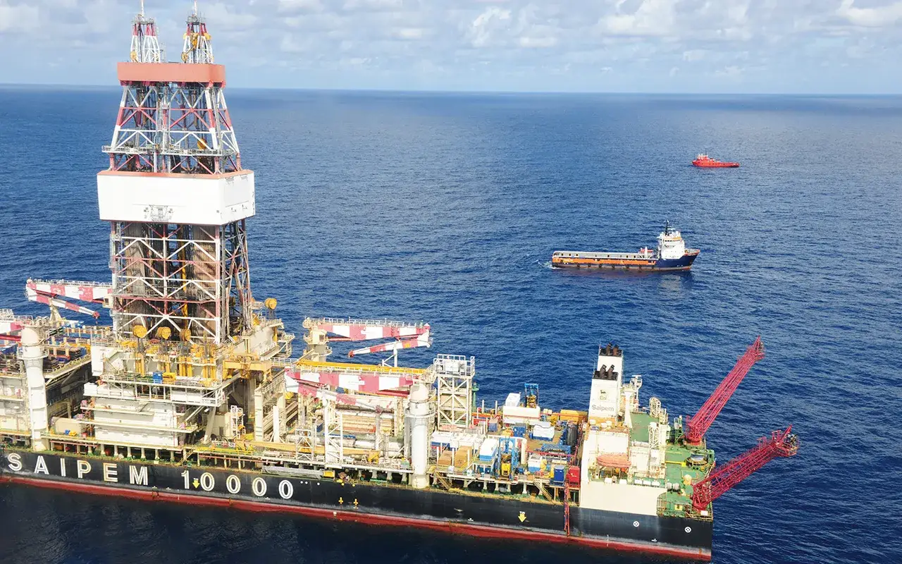

SINCE 1983
에너지의 길을 놓다
1970년대 오일쇼크 이후 석유 의존을 줄이고 에너지원을 다양하게 하려는 고민 속에서 천연가스 도입이 논의되기 시작했습니다. 1983년 한국가스공사가 설립되고 평택LNG생산기지가 준공되면서 발전용과 수도권 도시가스용 천연가스 공급이 시작됐습니다. 지금은 생산기지 5곳, LNG 저장탱크 77기, 전국 5,140km 배관망을 운영합니다.
40년1983 – 20231983년 8월 18일 설립
5,140km공급배관망2023년 6월 기준
4,093명함께하는 사람들설립 당시 247명
84%도시가스 보급률2023년 4월 기준

WORLD-CLASS INFRASTRUCTURE
세계 최대 규모의 천연가스 인프라
5개 생산기지, 77기의 LNG 저장탱크, 전국을 잇는 5,140km 배관망.
DIGITAL MUSEUM
다섯 개의 전시실
시대를 따라 걷고, 사업을 이해하고, 숫자로 확인하고, 사진과 기록으로 기억합니다.
CEO MESSAGE · VISION 2030
다음 걸음을 준비하며
40년의 경험을 바탕으로 앞으로의 방향을 영상으로 전합니다.
CEO MESSAGE
창립 40주년 CEO 메시지
VISION 2030
미래 비전 2030